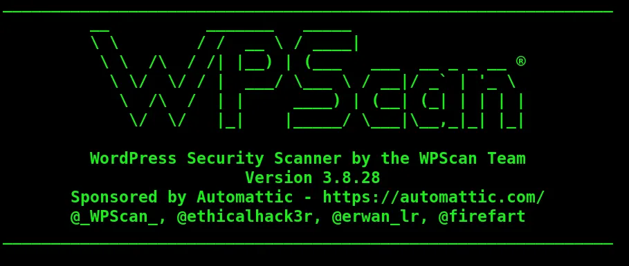
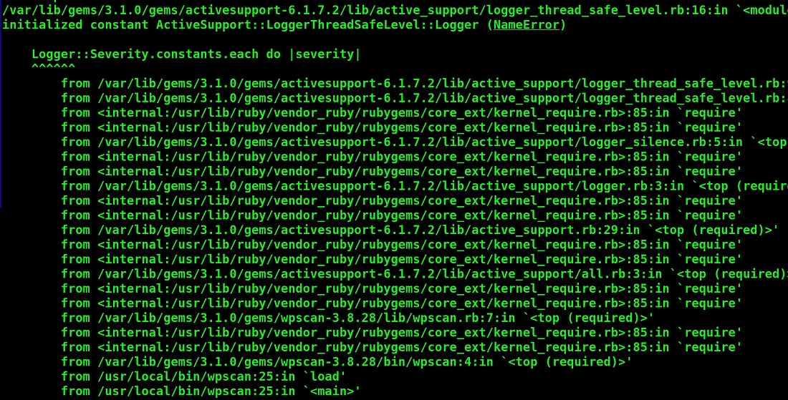

Introduction
WPScan is one of the most powerful tools used in WordPress security assessments. It is widely used in penetration testing, bug bounty hunting, and real-world security auditing.
What is WPScan?
WPScan is a well-known, widely used WordPress Security Scanner used in WordPress vulnerability Assessments, Penetration Testing, and even security research in cybersecurity for its efficiency at locating weaknesses in WordPress websites.
Real World Applications
- Bug Bounty Hunting
- Penetration Testing
- Blue Team Monitoring
- Web Security Audits
- Threat Intelligence
Installation (Linux)

WPScan installation process on LinuxInstall required dependencies:
sudo apt update
sudo apt install -y ruby ruby-devThe above commands will install gem which is a package manager for Ruby. It is used to install, manage, update Ruby libraries(gems), including tools like WPScan.
After installing the Ruby packages with the above commands, implement the below steps:
Install WPScan:
sudo gem install wpscan wpscan --version
This will install the WPScan tool and the required libraries.
If in any case, you near to get this following issue after installation:

WPScan installation errors on LinuxFix Common Error
If you face a logger issue:
nano /usr/local/bin/wpscan
Add:
require 'logger'
Other Installations
Arch Linux
sudo pacman -S wpscan
MacOS
brew install wpscanteam/tap/wpscan
Docker
docker pull wpscanteam/wpscan docker run -it wpscanteam/wpscan --help
Alright, let's get down to business:
WPScan Usage
i) Basic WordPress Scan
wpscan --url https://example.com
— url: To determine the url of a website
ii) Enumerate WordPress Components
To gather information about WordPress installation- WordPress version, installed plugins, installed themes, and users.
wpscan --url https://example.com --enumerate ap,at,cb,dbe,uap = all plugins, at = all themes, cb = config backup, dbe = db exports, u = users
iii) Enumerate Vulnerable Plugins
wpscan --url https://example.com --enumerate vpiv) Enumerate Vulnerable Themes
wpscan --url https://example.com --enumerate vtv) Scan With API Token
wpscan --url https://example.com --api-token YOUR_API_TOKENvi) Save Output to File
wpscan --url https://example.com -o wpscan-report.txtUse WPScan only on websites you own or are authorized to test.
vii) Password Brute-Forcing
wpscan --url --passwords --usernames usernames viii) Version Detection
Version detection is very important as if checked and when the version is out-dated then it might be vulnerable and exploitable too.
wpscan --url --enumerate v ix) Saving output in different formats
wpscan --url --output --format We output the file into any formats like JSON, CLI, XML.
Conclusion
WPScan remains one of the most effective tools for both offensive and defensive security. It is essential for anyone working in web security, penetration testing, or bug bounty hunting.